Lead Intake & Duplicate Verification System
An automated multi-source ingestion pipeline built with Make.com, relational Airtable record matching, and Selective CRM Data Synchronization: eliminating duplicate entries, standardizing contact fields, and routing verified leads in real time.
How Duplicate Leads Break Sales Pipelines
When growing service businesses run ads, webinars, and website forms simultaneously, prospects frequently submit multiple forms with slight variations (e.g., personal vs. work email, formatted vs. raw phone numbers). Without centralized deduplication, CRMs become bloated with duplicate contacts, causing reps to cross wires and send conflicting follow-ups.
Deal notes, consultation notes, and form submissions split across multiple records for the same client.
Marketing cannot accurately track campaign ROI because duplicate records mask original source attribution.
Unified Multi-Stage Ingestion & Deduplication Architecture
The system maps the complete ingestion cycle: Inbound Webhook Listener → Normalization Engine → Relational Airtable Match → HubSpot Contact & Deal Router. Click the diagram below to inspect the complete operational blueprint in high resolution:
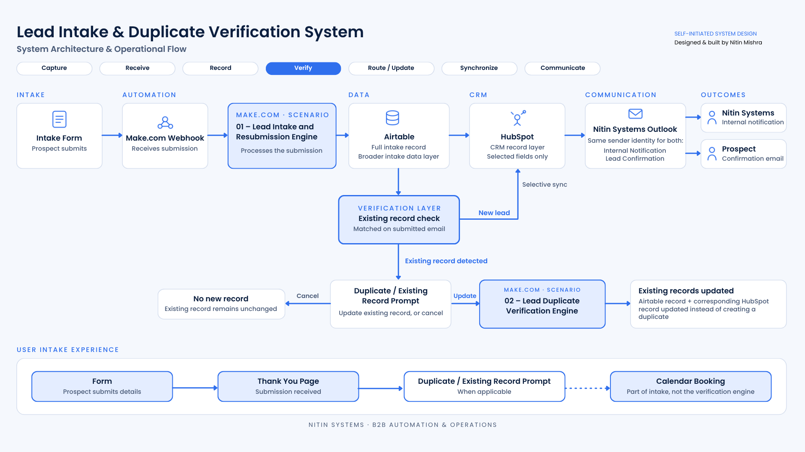
Full vector schematic detailing webhook endpoints, deduplication filters, Airtable indexing, and HubSpot CRM routing logic.
Expand the architecture diagram on-screen with anti-clipping full viewport scrolling for deep technical inspection.
Front-End Capture, Duplicate Interception & Confirmation
The intake journey captures prospect intent, detects duplicate submissions instantly, and guides the user smoothly to qualification and booking:
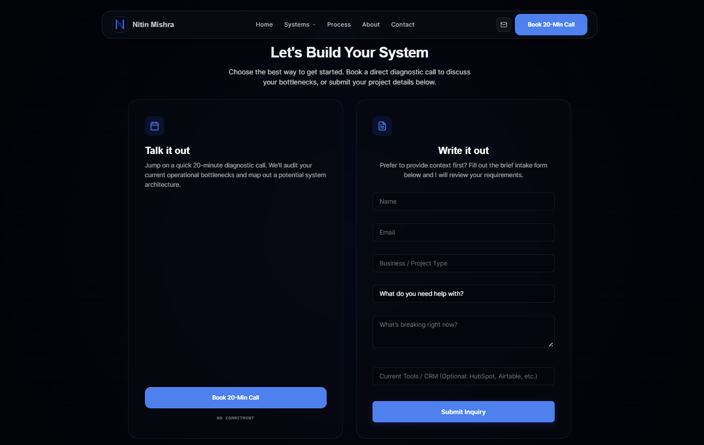
Clean client-facing capture form validating work email, phone number, and service requirements.
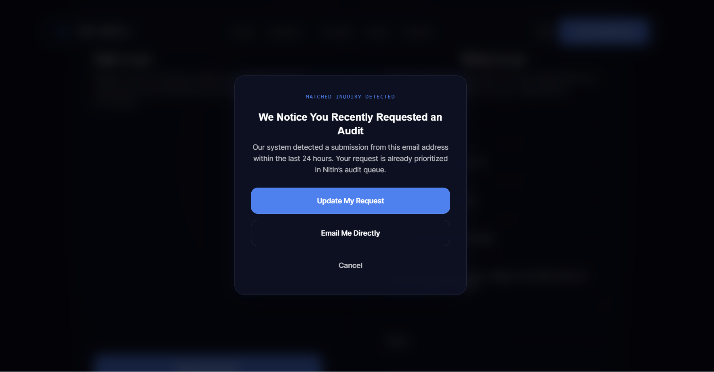
Real-time modal intercepting repeated form submissions gracefully without blocking the prospect.
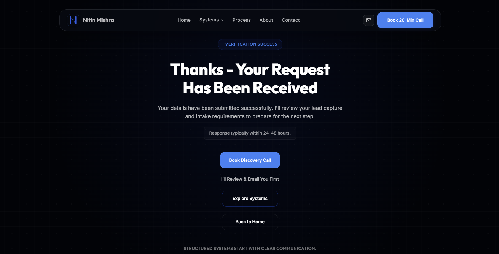
Verified submission landing screen outlining next steps, confirming intake details, and prompting direct calendar scheduling.
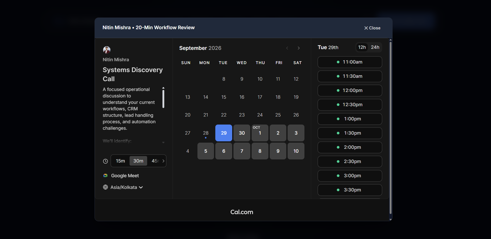
Direct calendar scheduling widget launched from the confirmation screen or website navigation for immediate slot booking.
Automated Ingestion, Matching & Routing Pipelines
Engineered with multi-module Make.com scenarios to decouple webhook reception from complex CRM logic and eliminate data loss under traffic surges:
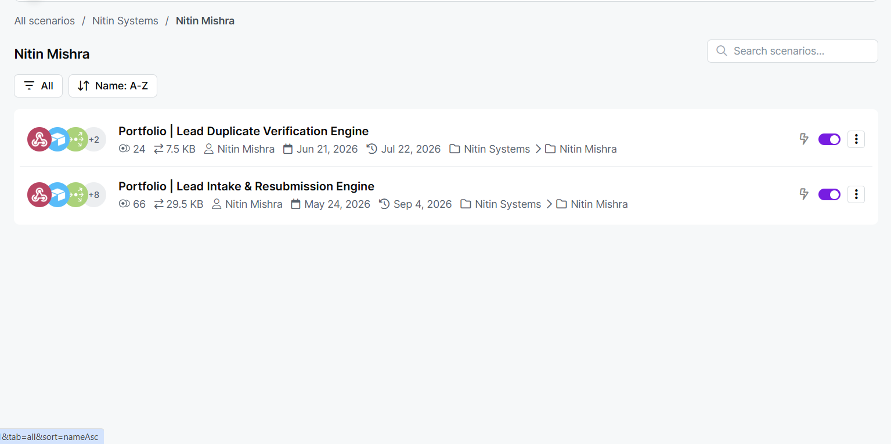
Overview of active scenario modules handling webhook intake, relational lookup, and downstream CRM updates.
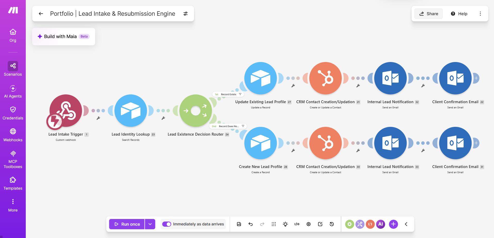
Ingests inbound payload, cleanses email strings, canonicalizes phone numbers, and registers raw transaction record.
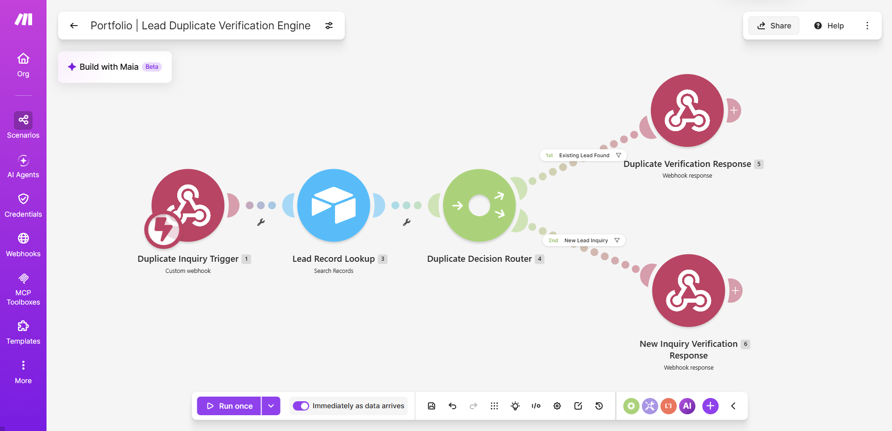
Executes multi-key relational lookup across canonical email, normalized phone, and domain. If duplicate, updates deal timestamp and appends history; if net-new, creates verified contact and deal.
Airtable Relational Index & HubSpot CRM Verification
Live database records confirming clean relational normalization across Airtable and synchronized HubSpot CRM pipelines:
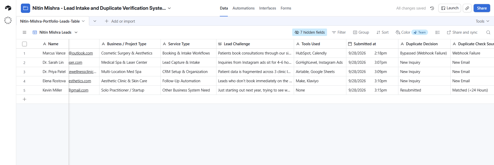
Structured 3-table index maintaining raw ingest log, verified master contacts, and duplicate audit ledger.
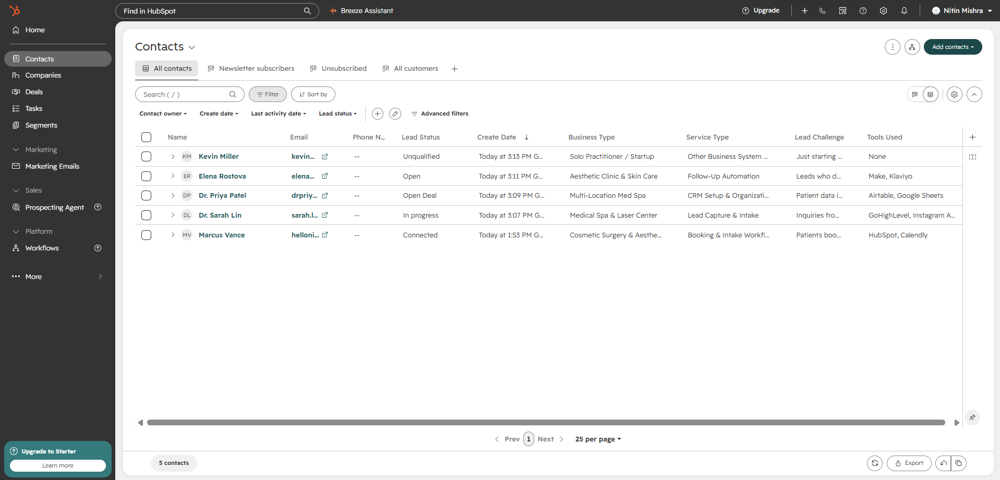
Synced HubSpot CRM contacts with verified lifecycle stages, custom intake properties, and deal association.
Notification Proof & Full System Documentation
Automated communication triggers informing both the internal sales team and the prospective client, paired with the comprehensive PDF case study:
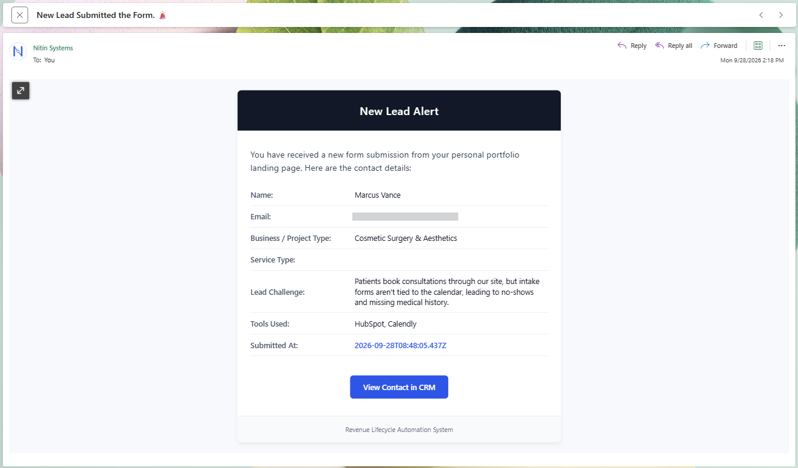
Automated team alert delivered with prospect qualification data, duplicate status, and direct CRM record link.
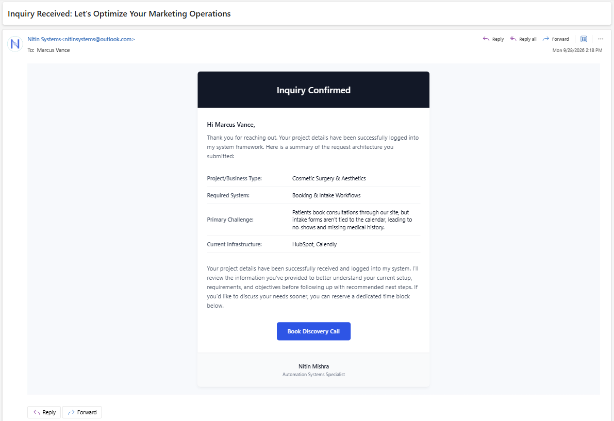
Clean auto-responder sent to the lead acknowledging their inquiry with personalized intake confirmation details.
Download Full Technical Case Study Document
Read the complete 12-page systems document covering Make.com webhook security, Airtable normalization scripts, and duplicate detection benchmarks.
Related Production Systems & Case Studies
Explore other active client implementations and AI-assisted lifecycle recovery blueprints:
Lead Capture to Booking
GoHighLevel calendar automation, 2-way Google sync, and instant SMS reminders.
AI Customer Journey Ops
7-scenario Make.com automation, relational Airtable records, and Make.com AI Agent triage.
Need a clean intake & deduplication pipeline for your CRM?
I can engineer a custom Make.com ingestion flow, Airtable record-matching engine, and clean HubSpot CRM sync for your business.